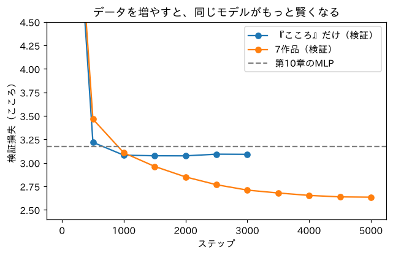
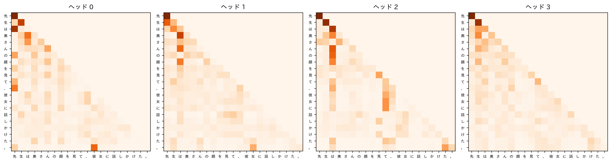

第3部 Transformerを組み立てる · 第13章
ミニGPTを鍛える：GPUで本格学習
漱石の小説7冊、100万字で、自分のGPTを育てる
おすすめは「ページを読みながら、コードを自分のノートブックに1セルずつ貼って実行」。完成ノートは困ったときの答え合わせ用です。
つくるもの
夏目漱石の7作品（約100万字）で学習した、あなただけの「漱石GPT」。トップページで動いているのと同じ設定です
身につく数学・理論
- データを増やすと過学習が減る（データの大切さ）
- GPUへの転送と混合精度（float16・autocast）
- チェックポイント（学習途中の保存）
- 学習曲線で2つの実験を比べる
- マルチヘッドAttentionの役割分担
新しく使うPython・PyTorch
!wgetでファイルを取ってくる- 自作モジュールの
import torch.autocastとGradScaler- 辞書で設定をまとめて保存

ミナト
ついに来ましたね、GPT！ 第1章のQwenと比べると、どれくらいの大きさなんですか？

ボンゴ先生
パラメータは約175万個。Qwen2.5-0.5Bの約280分の1だ。読ませる文章も100万字と、Qwenの数兆トークンに比べれば、太平洋に対するバスタブくらい。でも、仕組みはまったく同じGPTだ。バスタブでも、泳ぎの練習はできる。
準備：GPUのランタイムにする
この章は GPU を使います。Colabのメニューで「ランタイム」→「ランタイムのタイプを変更」→「T4 GPU」を選んでから始めましょう。
import torch
device = "cuda" if torch.cuda.is_available() else "cpu"
print("使う装置：", device)
if device == "cuda":
print(torch.cuda.get_device_name(0))使う装置： cuda
Tesla T4cpu と出た人も、この章のコードはそのまま動きます。ただし学習に1時間以上かかるので、GPUが使えるタイミング（混んでいない夜や早朝など）を狙うか、付録AのKaggleを使うのがおすすめです。
第12章のGPTを取ってくる
第12章で一行ずつ書いたGPTのコードは、教科書のリポジトリに minigpt.py というファイルで置いてあります（中身は第12章のコードとまったく同じです）。wget というLinuxのコマンドでダウンロードして、import します。
!wget -q https://raw.githubusercontent.com/sakunokyumei/llm-research-textbook/main/code/minigpt.py
from minigpt import GPT
print("ミニGPTの設計図を読み込みました")ミニGPTの設計図を読み込みました漱石の7作品を読み込む
第9章までと同じ load_soseki（下のセルで定義し直します）を使って、7作品をまとめて読み込みます。
import re, math, urllib.request
def load_soseki(file_id="773_ruby_5968"):
url = ("https://raw.githubusercontent.com/aozorahack/aozorabunko_text/master/"
f"cards/000148/files/{file_id}/{file_id}.txt")
text = urllib.request.urlopen(url).read().decode("cp932")
text = text.split("-------------------------------------------------------")[2]
text = text.split("底本：")[0]
text = re.sub(r"《.*?》", "", text)
text = re.sub(r"※?［＃.*?］", "", text)
text = text.replace("｜", "").replace("\r\n", "\n")
text = re.sub(r"\n{3,}", "\n\n", text)
return text.strip()
works = {
"こころ": "773_ruby_5968",
"坊っちゃん": "752_ruby_2438",
"吾輩は猫である": "789_ruby_5639",
"三四郎": "794_ruby_4237",
"草枕": "776_ruby_6020",
"夢十夜": "799_ruby_6024",
"それから": "56143_ruby_50824",
}
texts = {}
for title, file_id in works.items():
texts[title] = load_soseki(file_id)
print(f"{title}：{len(texts[title]):,} 文字")
all_text = "\n\n".join(texts.values())
chars = sorted(set(all_text))
V = len(chars)
stoi = {ch: i for i, ch in enumerate(chars)}
itos = {i: ch for ch, i in stoi.items()}
print(f"合計：{len(all_text):,} 文字、語彙：{V} 文字")こころ：162,467 文字
坊っちゃん：88,997 文字
吾輩は猫である：321,104 文字
三四郎：171,888 文字
草枕：85,547 文字
夢十夜：16,197 文字
それから：174,641 文字
合計：1,020,853 文字、語彙：3665 文字約102万字、語彙は3,665文字になりました。『こころ』だけのとき（2,061文字）より、使われる漢字が増えています。
次に、データを訓練用と検証用に分けます。これまでの章と成績を比べられるように、検証データは『こころ』の最後の10%のままにしておきます。ほかの作品は、それぞれ前90%を訓練に使います。
def encode(s):
return torch.tensor([stoi[c] for c in s], dtype=torch.long)
kokoro = texts["こころ"]
nk = int(len(kokoro) * 0.9)
kokoro_train = encode(kokoro[:nk])
kokoro_val = encode(kokoro[nk:]) # 記録表と同じ検証データ
others = [encode(t[:int(len(t) * 0.9)]) for title, t in texts.items() if title != "こころ"]
all_train = torch.cat([kokoro_train] + others)
print("『こころ』だけの訓練データ：", len(kokoro_train))
print("7作品の訓練データ： ", len(all_train))『こころ』だけの訓練データ： 146220
7作品の訓練データ： 918754学習の道具をそろえる
ミニバッチを作る関数、検証損失を測る関数、学習率スケジュール（第10章）を用意します。検証損失は、検証データを128文字ずつに区切って全部で測るので、毎回同じ値になります。
block_size = 128 # 何文字前まで見るか（窓の大きさ）
batch_size = 32 # 1回に何個の窓を学習するか
def get_batch(data, g):
ix = torch.randint(0, len(data) - block_size - 1, (batch_size,), generator=g)
x = torch.stack([data[i:i + block_size] for i in ix])
y = torch.stack([data[i + 1:i + block_size + 1] for i in ix])
return x.to(device), y.to(device)
@torch.no_grad()
def val_loss(model, data):
model.eval()
starts = range(0, len(data) - block_size - 1, block_size)
xs = torch.stack([data[i:i + block_size] for i in starts])
ys = torch.stack([data[i + 1:i + block_size + 1] for i in starts])
total = 0.0
for j in range(0, len(xs), 64):
_, loss = model(xs[j:j + 64].to(device), ys[j:j + 64].to(device))
total += loss.item() * len(xs[j:j + 64])
model.train()
return total / len(xs)
def lr_at(step, max_lr, total, warmup=200):
if step < warmup:
return max_lr * step / warmup
progress = (step - warmup) / (total - warmup)
return max_lr * 0.5 * (1 + math.cos(math.pi * progress)).to(device) で、データをGPUのメモリに送っています。GPUで計算するには、モデルとデータの両方がGPUにいる必要があります。
基礎の補足model.train() / model.eval() と torch.no_grad() の違い（なぜ両方必要？）
val_loss 関数には @torch.no_grad()・model.eval()・model.train() の3つが登場します。初学者が最も混同しやすい2つのスイッチを整理しておきましょう。
| スイッチ | 何を切り替えるか | 忘れると何が起きるか |
|---|---|---|
model.eval() / model.train() | Dropout などの層の挙動（評価中はランダムな遮断をオフにして全ユニットを使う） | eval() 忘れ → 検証損失がブレて悪化。末尾の train() 忘れ → 以後の訓練で Dropout が永遠にオフになり過学習！ |
@torch.no_grad() / with torch.no_grad(): | 微分用の計算グラフ記録（逆伝播のための途中メモを保存しない） | 忘れ → 評価中も不要なメモがGPUメモリ（VRAM）を圧迫して遅くなる・メモリ不足の原因に |
この2つはまったく別のスイッチなので、検証や文章生成のときは必ず両方セットで使い、学習ループに戻る前に model.train() へ戻します。
また、lr_at(step, max_lr, total, warmup=200) は、最初の warmup ステップで 0 → max_lr まで直線的に上げ（ウォームアップ）、その後は に従って滑らかに max_lr → 0 へ下げる（コサイン減衰）関数です。たとえば max_lr=0.001, total=1000, warmup=200 なら、step=0 で 0.0、step=100 で 0.0005、step=200 で最大 0.001、step=600（減衰の中間点）で 0.0005、step=1000 で 0.0 になります。
学習ループ（GPU対応版）
第10章の学習ループに、GPUで速く学習するための工夫（混合精度）を足したものです。
def train(train_data, max_iters, lr=1e-3, seed=0, log_every=500):
torch.manual_seed(seed)
g = torch.Generator().manual_seed(seed)
model = GPT(V, block_size=block_size, n_embd=128, n_head=4, n_layer=4, dropout=0.1).to(device)
opt = torch.optim.AdamW(model.parameters(), lr=lr, weight_decay=0.1)
scaler = torch.amp.GradScaler(device, enabled=(device == "cuda"))
history = []
for step in range(max_iters + 1):
for group in opt.param_groups:
group["lr"] = lr_at(step, lr, max_iters)
x, y = get_batch(train_data, g)
with torch.autocast(device_type=device, dtype=torch.float16, enabled=(device == "cuda")):
_, loss = model(x, y)
opt.zero_grad(set_to_none=True) # 勾配を0にする代わりに捨てる（第8章の W.grad = None と同じ）
scaler.scale(loss).backward()
scaler.unscale_(opt)
torch.nn.utils.clip_grad_norm_(model.parameters(), 1.0)
scaler.step(opt)
scaler.update()
if step % log_every == 0:
vl = val_loss(model, kokoro_val)
history.append((step, loss.item(), vl))
print(f"ステップ {step:5d}：訓練 {loss.item():.3f} 検証（こころ）{vl:.3f}")
return model, history基礎の補足勾配クリッピング（clip_grad_norm_）はなぜ必要？ unscale_ との順番も確認
学習ループの後半にある次の2行は、大規模LLMの学習で欠かさず入れられる「安全ベルト」です。
scaler.unscale_(opt) # ① 先に拡大を元に戻す
torch.nn.utils.clip_grad_norm_(model.parameters(), 1.0) # ② 元の大きさの勾配を上限 1.0 で切るなぜ勾配爆発が起きるのか？ 深いネットワークの逆伝播では、たまたま難しいミニバッチに当たった瞬間などに勾配が極端に大きくなる（勾配爆発）ことがあります。そのまま更新すると1ステップで重みが吹き飛び、損失が急上昇したり NaN になったりします。
L2 ノルムクリッピングの仕組み：全パラメータの勾配を1本のベクトル とみなし、長さ（L2 ノルム） を計算します。これが上限 max_norm = 1.0 を超えたときだけ、全勾配に同じ係数 を掛けて縮めます。
- たとえば なら なので、
1.0 / 5.0 = 0.2倍して[0.6, 0.8]にします（長さはちょうど1.0、向きは3:4のまま不変！）。 - なら何もしません。
なお、scaler.scale(loss).backward() の直後は勾配が数千倍に拡大されたままなので、必ず先に scaler.unscale_(opt) で元の大きさに戻してから clip_grad_norm_ を呼ぶのが鉄則です。
実験1：『こころ』だけで学習
まずは、これまでの章と同じ『こころ』だけで学習させます。これで、これまでのモデルとの公平な比較ができます。
model_k, hist_k = train(kokoro_train, max_iters=3000)ステップ 0：訓練 8.217 検証（こころ）8.207
ステップ 500：訓練 3.089 検証（こころ）3.218
ステップ 1000：訓練 2.622 検証（こころ）3.081
ステップ 1500：訓練 2.303 検証（こころ）3.075
ステップ 2000：訓練 2.233 検証（こころ）3.075
ステップ 2500：訓練 2.099 検証（こころ）3.092
ステップ 3000：訓練 2.091 検証（こころ）3.091実験2：7作品で学習
次に、同じモデル・同じ設定で、データだけを7作品（約6.3倍）に増やします。検証データは同じ『こころ』の最後の10%です。
model_all, hist_all = train(all_train, max_iters=5000)ステップ 0：訓練 8.220 検証（こころ）8.207
ステップ 500：訓練 3.724 検証（こころ）3.465
ステップ 1000：訓練 3.371 検証（こころ）3.107
ステップ 1500：訓練 3.158 検証（こころ）2.962
ステップ 2000：訓練 3.157 検証（こころ）2.850
ステップ 2500：訓練 3.119 検証（こころ）2.767
ステップ 3000：訓練 2.972 検証（こころ）2.710
ステップ 3500：訓練 3.007 検証（こころ）2.679
ステップ 4000：訓練 2.832 検証（こころ）2.653
ステップ 4500：訓練 2.873 検証（こころ）2.638
ステップ 5000：訓練 2.876 検証（こころ）2.635T4 GPUなら数分、CPUなら1時間ほどかかります。待っている間に、次の節を読んでおきましょう。
大事なモデルを保存する
比べたり書かせたりする前に、まず保存しましょう。せっかく学習したモデルも、Colabのセッションが切れると消えてしまいます。保存先はGoogleドライブです（第10章と同じ手順）。今回は、モデルの中身だけでなく、語彙と設定もいっしょに保存します。第24章で、このファイルからブラウザで動くモデルを作ります。
from google.colab import drive
drive.mount("/content/drive")import os
save_dir = "/content/drive/MyDrive/tsukuru-llm"
os.makedirs(save_dir, exist_ok=True)
checkpoint = {
"model": model_all.state_dict(),
"chars": chars,
"config": {"vocab_size": V, "block_size": block_size, "n_embd": 128, "n_head": 4, "n_layer": 4, "dropout": 0.1},
}
torch.save(checkpoint, f"{save_dir}/soseki_gpt.pt")
print("保存しました：", round(os.path.getsize(f"{save_dir}/soseki_gpt.pt") / 1e6, 1), "MB")保存しました： 8.1 MB続きを別の日にやるとき
この章は長いので、ここで一度休んでもOKです。次の日に続きをやるときは、次の順にセルを実行してから、下のセルで保存したモデルを読み込みます。
- 「準備：GPUのランタイムにする」「第12章のGPTを取ってくる」のセル
- 「漱石の7作品を読み込む」の2つのセル（データと語彙を作り直す。保存したときと同じ語彙になります）
- 「学習の道具をそろえる」「学習ループ（GPU対応版）」のセル（関数を作るだけなので、すぐ終わります）
- 「大事なモデルを保存する」の節は、
drive.mountのセルだけ（保存のセルは実行しない）
実験1・実験2の学習のセルと、保存のセルは飛ばします。
save_dir = "/content/drive/MyDrive/tsukuru-llm"
ckpt = torch.load(f"{save_dir}/soseki_gpt.pt", map_location=device)
model_all = GPT(**ckpt["config"]).to(device) # 保存した設定で、同じ形のGPTを作る
model_all.load_state_dict(ckpt["model"]) # 学習した中身を流し込む
print("読み込みました。語彙は同じ？", ckpt["chars"] == chars)読み込みました。語彙は同じ？ TrueGPT(**ckpt["config"]) の ** は、第3章の model(**inputs) と同じ「辞書の中身を名前つきの引数として渡す」書き方です。GPT(vocab_size=3665, block_size=128, …) と書いたのと同じ意味になります。なお、次の節の「2つの実験を比べる」グラフは、学習中の記録（hist_k と hist_all）が必要なので、休んだ後は描けません。その節は !pip install のセルだけ実行して、グラフは教科書の図で確かめましょう。その後の「書かせてみる」「ヘッドたちの役割分担を見る」は、そのまま実行できます。
基礎の補足state_dict() チェックポイントに config・chars と map_location が必要な理由
model.state_dict() が返すのは、「層の名前の文字列 → 重みテンソル」の対応辞書だけです。Python のクラス定義（class GPT）も、モデルの寸法（n_embd や n_layer）も、文字とIDの対応表も含まれていません。
そのため、安全に復元できるチェックポイントには必ず次の3点セットを保存します。
"model": model.state_dict()：学習したすべての重みとバッファ（tril等）"config": {...}：復元時にまったく同じ形の箱GPT(**ckpt["config"])を作るための設計寸法"chars": chars：文字とトークンIDの対応表（これが1文字でもずれると生成結果が文字化けする）
さらに読み込み時に map_location=device を指定しておけば、「T4 GPU で保存した重みを、別の日に CPU 環境で読み込む」ときもデバイス不一致エラーを防げます。
2つの実験を比べる
!pip install -q matplotlib-fontjaimport matplotlib.pyplot as plt
import matplotlib_fontja
plt.figure(figsize=(6.5, 3.8))
for hist, label in [(hist_k, "『こころ』だけ"), (hist_all, "7作品")]:
steps = [h[0] for h in hist]
plt.plot(steps, [h[2] for h in hist], marker="o", label=label + "（検証）")
plt.axhline(3.177, color="gray", linestyle="--", label="第10章のMLP")
plt.xlabel("ステップ"); plt.ylabel("検証損失（こころ）")
plt.ylim(2.4, 4.5)
plt.legend(); plt.title("データを増やすと、同じモデルがもっと賢くなる")
plt.show()
基礎の補足訓練損失と検証損失の「ギャップ」で読み解くデータスケーリング効果
2つの実験のログを「訓練損失」と「検証損失（こころ）」の差（ギャップ）で並べてみると、データ量の威力が一目で分かります。
| 実験 | 訓練データ量 | ステップ | 訓練損失 | 検証損失（こころ） | 状態 |
|---|---|---|---|---|---|
| 実験1（『こころ』のみ） | 14.6万字 | 1500 | 2.303 | 3.075 | ギャップ +0.77（過学習の始まり） |
| 実験1（『こころ』のみ） | 14.6万字 | 3000 | 2.091 | 3.091（悪化） | ギャップ +1.00（丸暗記が進行） |
| 実験2（漱石7作品） | 91.9万字（6.3倍） | 3000 | 2.972 | 2.710 | 過学習せず着実に汎化 |
| 実験2（漱石7作品） | 91.9万字（6.3倍） | 5000 | 2.876 | 2.635（大幅更新） | 最後まで検証損失が下がり続けた |
注目すべきは、訓練損失だけ見れば実験1（2.091）の方が実験2（2.876）より低いことです。しかしそれは『こころ』を丸暗記した見せかけの点数にすぎません。未知の検証データでは実験2（2.635）が圧勝しており、「訓練損失の低さ＝賢さではない」ことが実測データで分かります。
書かせてみる
7作品で学習したGPTに、いろいろな書き出しを与えてみましょう。
def write(model, start, n=150, temperature=0.8, seed=0):
torch.manual_seed(seed)
model.eval()
idx = encode(start)[None].to(device)
out = model.generate(idx, max_new_tokens=n, temperature=temperature)
return "".join(itos[i] for i in out[0].tolist())
for start in ["吾輩は", "先生は", " 山路を登りながら"]:
print(write(model_all, start))
print("-" * 40)吾輩はあらず御客さんが近頃のうちに、あって、車屋へ帰りになって橋石でも婆さん、あたりするつもりではないから、元の御飯が食うと大きな声だけで、あんな食うじゃないか」
「御茶を飲んでしたか」
「うん、どうかも知れない。え？」
「ええ、よし子さんに御用はありません。この原口さんのおさんが、どこかへ行ってやっぱい
----------------------------------------
先生はある。そうかして先生のうちに、あっちからそうなりみをしているで、先生は、あたりすこぶる熊本がたいって、性の目を凹ました」「私はあの時のあいです」と言った。奥さんはまた聞いたが、「帽子のうちでも亡くなったのかい」と、しばらくすると、「あなたはどうしてもお宅から原口さんの事がないんですか」と与次郎のほう
----------------------------------------
山路を登りながら、大きな木の中に近い寂として、あった、室の一方へ灯をとり抜いで、婆さんと車を向けた。
「ああなたは朝もう一つすが、何だか行くかい」と云った。代助は単簡に答えた。
「今度は何がたくって、大きくまで中梃なものだい」と、しばらくすると、額を手にした。
「そう。この原口さんの事がないんだ」
「わたしにしてい
----------------------------------------ボンゴ先生
どうだい、キミのGPTの「作品」は？ 第4章の「私は腎臓の運ばなた。」から、ずいぶん遠くまで来ただろう？ 文法はだいぶ整い、漱石らしい言い回しも出てくる。ただし、話の筋はまだ迷子だ。175万個のつまみと100万字では、このあたりが限界。ChatGPTが賢いのは、この何万倍ものつまみとデータがあるからなんだよ。
記録表
| モデル | 章 | パラメータ | 学習データ | 検証データの損失 |
|---|---|---|---|---|
| でたらめ | 5 | — | — | 7.631 |
| bigram（数える） | 5 | — | こころ | 3.581 |
| MLP（全部の治療） | 10 | 66万 | こころ | 3.177 |
| Attention 1ヘッド | 11 | 28万 | こころ | 3.31 |
| ミニGPT（4層・4ヘッド） | 13 | 約175万 | こころ | 3.075（1500〜2000ステップ） |
| ミニGPT（4層・4ヘッド） | 13 | 約175万 | 漱石7作品 | 2.635（5000ステップ） |
※ 第13章のモデルは語彙が3,665文字に増えているので、厳密には少しだけ不利な条件での比較です。数値は教科書の検証環境（CPU）での実測値です。GPUで実行したあなたの数値も、ぜひ表に書き足してください。
第10章のMLP（3.177）から、『こころ』だけのGPTで 3.075、7作品のGPTで 2.635。パープレキシティにすると、24択から約14択へ。数えるbigram（36択）から比べると、迷いが半分以下になりました。
ヘッドたちの役割分担を見る
最後に、学習したGPTの4つのヘッドが、それぞれどこに注目しているかを見てみましょう（第11章の1ヘッドとの違いに注目）。
import matplotlib.pyplot as plt
import matplotlib_fontja # グラフで日本語を表示する（上の !pip install が必要）
sample = "先生は奥さんの顔を見て、彼女に話しかけた。"
idx = encode(sample)[None].to(device)
model_all.eval()
with torch.no_grad():
model_all(idx)
fig, axes = plt.subplots(1, 4, figsize=(16, 4.4))
heads = model_all.blocks[-1].attn.heads # 最後の層の4つのヘッド
for h, ax in enumerate(axes):
ax.imshow(heads[h].wei[0].float().cpu(), cmap="Oranges")
ax.set_xticks(range(len(sample))); ax.set_xticklabels(list(sample), fontsize=7)
ax.set_yticks(range(len(sample))); ax.set_yticklabels(list(sample), fontsize=7)
ax.set_title(f"ヘッド {h}")
plt.tight_layout()
plt.show()
ヘッドによって、注目の仕方が違います。上の図では、ヘッド0は文の頭の「先」を、ヘッド1と2は「先生は」の「は」（主語の区切り）をよく見ています。ヘッド3は、自分の近くの文字に広く注目しています。誰も役割を割り振っていないのに、学習の中で自然に分業が生まれているのです。あなたのモデルの図は、これとは違う分業になっているかもしれません。どのヘッドがどこを見ているか、観察してみましょう。
できたらチェック
ボンゴ先生
第3部、完走おめでとう！ キミはもう「GPTをゼロから作って学習させたことがある人」だ。世界中を探しても、そう多くはない。次の第4部では、自作GPTを「本物」に近づける。まずはトークナイザー。いまは1文字＝1トークンだけど、本物のLLMはBPEを使っていた（第2章）。それを自分で作るところからだ。
説明の読了チェックです（ブラウザ内にのみ保存）。「理解・定着」は途中の確認問題・自力実装・間隔復習の結果と合わせて記録されます。